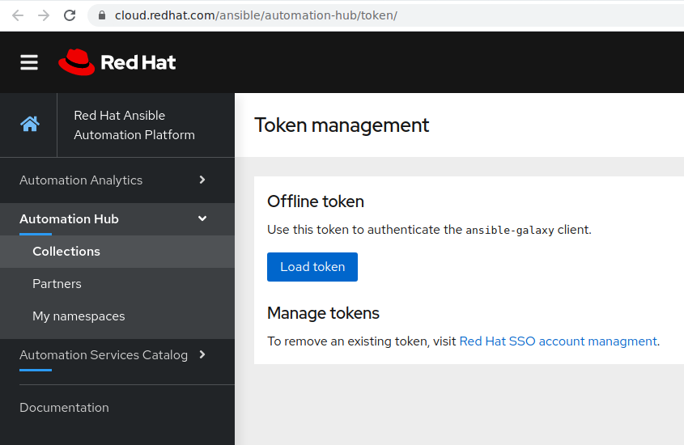
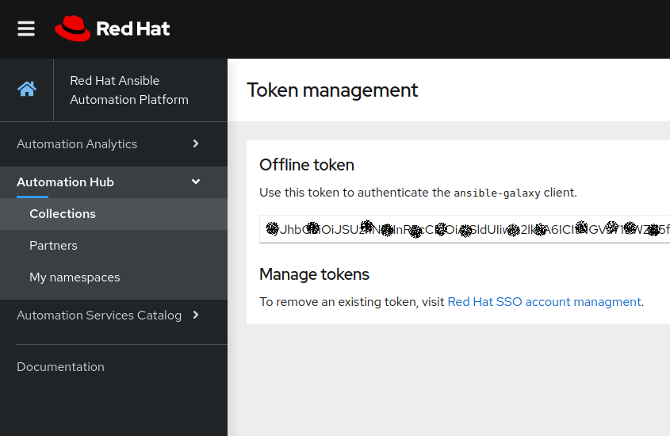
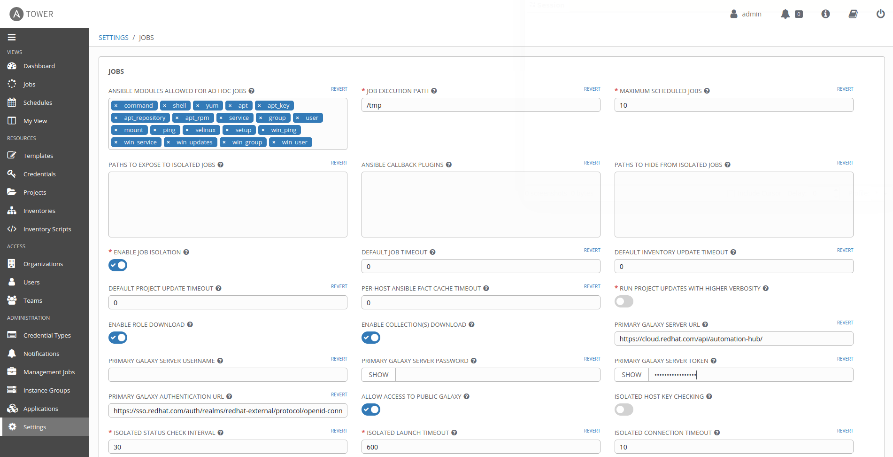

Automation Hub is a service that is provided as part of the Red Hat SaaS offering to subscribers of Ansible Automation Platform. It is a central location where supported and certified Ansible Content Collections by Red Hat and its Partners can be found, downloaded and integrated into your Ansible automation. The support for Automation Hub is included with Red Hat Automation Platform subscription.
Red Hat Automation Hub resides on https://cloud.redhat.com/ansible/automation-hub and requires Red Hat customer portal credentials and a valid and active Red Hat Automation Platform subscription.
In the portal of Automation Hub, users have direct access to certified content collections from Red Hat and Partners. Certified collections are developed, tested, built, delivered, and supported by Red Hat and its Partners. To find more details about the scope of support, check the Ansible Certified Content FAQ,
Automation Hub is a one-stop-shop for Ansible content that is backed by support from Red Hat to deliver additional reassurance for customers. Additional supportability claims for these collections may be provided under the “Maintained and Supported By” one of Red Hat Partners. A list of currently supported content can be found in the Knowledge base.
Ansible Galaxy is the upstream location for the Ansible community that initially started to provide pre-packaged units of work known as Ansible roles. Roles can be used from Ansible Playbooks and immediately put to work. in a recent version of Galaxy started to provide Ansible content collections as well.
Ansible Galaxy resides on https://galaxy.ansible.com/
Ansible collections can be used and downloaded from multiple locations. They can either be downloaded using a requirement file, statically included in the git repository or eventually installed separately in the virtual environment.
This is not an exercise you can actually run in this environment because you would need to have an account to Ansible Automation Hub that comes with a subscription of Ansible Automation Platform. It is here for your information.
Authenticating Ansible Tower requires a token. It can be achieved using the steps below:
Navigate to https://cloud.redhat.com/ansible/automation-hub/token/

Click Load Token.
Click copy icon to copy the API token to the clipboard.

As user admin, navigate to the Settings l> Jobs
Set PRIMARY GALAXY SERVER URL to https://cloud.redhat.com/api/automation-hub/
Set PRIMARY GALAXY AUTHENTICATION URL to https://sso.redhat.com/auth/realms/redhat-external/protocol/openid-connect/token
Set PRIMARY GALAXY SERVER TOKEN to <COPIED_TOKEN>
It is recommended using Red Hat Automation Hub as primary Galaxy Server URL to ensure using certified and supported content by Red Hat and its partners via Red Hat Ansible Automation subscription.

After authenticating Ansible Tower to access Automation Hub, using a collections/requirements.yml file automatically fetches the content collections from Automation Hub as first source.